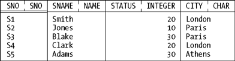

What's a Relation?
I'll use our usual suppliers relation as a basis for examples in this section. Here's a picture:

And here's a definition:
Definition: Let {H} be a tuple heading and let t1, t2, . . . , tm (m  0) be distinct tuples with heading {H}. The combination, r say, of {H} and the set of tuples {t1, t2, . . . , tm} is a relation value (or just a relation for short) over the attributes A1, A2, . . . , An, where A1, A2, . . . , An are the attributes in {H}. The heading of r is {H}; r has the same attributes (and hence the same attribute names and types) and the same degree as that heading does. The body of r is the set of tuples {t1, t2, . . . , tm}. The value m is the cardinality of r. 0) be distinct tuples with heading {H}. The combination, r say, of {H} and the set of tuples {t1, t2, . . . , tm} is a relation value (or just a relation for short) over the attributes A1, A2, . . . , An, where A1, A2, . . . , An are the attributes in {H}. The heading of r is {H}; r has the same attributes (and hence the same attribute names and types) and the same degree as that heading does. The body of r is the set of tuples {t1, t2, . . . , tm}. The value m is the cardinality of r.
I'll leave it as an exercise to interpret the suppliers relation in terms of the foregoing definition. However, I will at least explain why we call such things relations. Basically, each tuple in a relation represents an n-ary relationship, in the ordinary natural-language sense, among a set of n values (one value for each tuple attribute), and the full set of tuples in a given relation represents the full set of such relationships that happen to exist at some given time—and, mathematically speaking, that's a relation. Thus, the "explanation" often heard, to the effect that the relational model is so called because it lets us "relate one table to another," though accurate in a kind of secondary sense, really misses the basic point. The relational model is so called because it deals with certain abstractions that we can think of as "tables" but are known, formally, as relations in mathematics.
Now, a relation, like a tuple, is itself a value and has a type, and that type has a name. In Tutorial D, such names take the form RELATION{H}, where {H} is the heading. Here's an example:
RELATION { SNO SNO, SNAME NAME, STATUS INTEGER, CITY CHAR }
(The order in which the attributes are specified is arbitrary.) Also, every relation value is returned by some relation selector invocation—for example:
RELATION {
TUPLE { SNO SNO('S1'), SNAME NAME('Smith'),
STATUS 20, CITY 'London' } ,
TUPLE { SNO SNO('S2'), SNAME NAME('Jones'),
STATUS 10, CITY 'Paris' } ,
TUPLE { SNO SNO('S3'), SNAME NAME('Blake'),
STATUS 30, CITY 'Paris' } ,
TUPLE { SNO SNO('S4'), SNAME NAME('Clark'),
STATUS 20, CITY 'London' } ,
TUPLE { SNO SNO('S5'), SNAME NAME('Adams'),
STATUS 30, CITY 'Athens' } }
The order in which the tuples are specified is arbitrary.
What support does SQL provide for the foregoing ideas? The answer is: not much. It doesn't really have anything analogous to the concept of a relation type at all; rather, an SQL table is considered to consist of rows (a multiset or bag of rows, to be precise) that are of a certain row type. (It does have something it calls named table types, but this construct is very different from our relation type, and I'm not going to discuss it here.) It follows that SQL doesn't really have anything analogous to the RELATION type generator, either. It does, however, have something called a table value constructor that's akin, somewhat, to a relation selector. Here's an example:
VALUES ( 1, 2 ), ( 2, 1 ), ( 1, 1 ), ( 1, 2 )
This expression evaluates to a table with four—not three!—rows and two columns (which have no names).
|